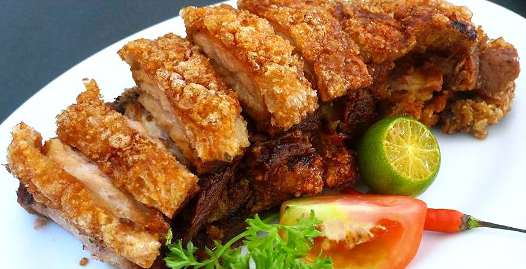

Bagnet Recipe

About the Dish
Bagnet is a crispy fried pork belly that is a staple food in the Ilocos region and beloved across Filipino tables. Bagnet has risen to cult status thanks to its addictive textures: crispy yet fatty, soft yet chewy all at once.
Ingredients
- 500 grams pork belly
- bay leaves
- 1 cup flour
- cooking oil
- salt and ground pepper
Instructions for cooking
- Boil your pork belly with aromatics (1 tbsp salt, garlic, black peppercorns, and bay leaves) for about 30 minutes or until tender.
- Allow to dry in refrigerator overnight.
- Set the air fryer to 450 °F for 20 minutes. Place the dried pork belly skin-side up on a rack in a baking pan. Bake for 20 minutes to render some of the fat from the skin. Let cool.
- Place the flour in a shallow bowl or large ziploc bag. Add the air fried pork belly pieces and toss to lightly dredge in the flour, shaking off the excess.Place the flour in a shallow bowl or large ziploc bag. Add the air fried pork belly pieces and toss to lightly dredge in the flour, shaking off the excess.
- Fry the dredged pork belly in 2 batches until browned and crispy, 5 to 7 minutes.
- Serve the crispy bagnet with your favorite dipping sauce or just enjoy straight out of the pan for ultimate flavor and crunch.